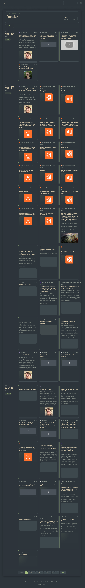

Issue #1020
Date rail, columns, and source branding for /reader/, demonstrated against the real waylonwalker.com blogroll configuration.
pkg/plugins/blogroll.gopkg/plugins/blogroll_reader_test.gotemplates/reader.htmlpkg/themes/default/templates/reader.htmlpkg/themes/default/static/css/components.cssspec/spec/FEEDS.mddocs/guides/blogroll.mddocs/guides/configuration.mdpkg/agentskill/bundle/markata-go-site/reference/template-context.mdreports/issue-1020-reader-redesign.htmlreports/issue-1020-waylon-reader-demo.pngreports/issue-1020-waylon-demo-benchmark.json
gofmt -w pkg/plugins/blogroll.go pkg/plugins/blogroll_reader_test.gogo test ./pkg/plugins -run TestBlogrollPlugin_ReaderDayGroups -v passed.go test ./pkg/plugins passed.go build ./cmd/markata-go passed.MARKATA_GO_ENCRYPTION_KEY_DEFAULT='Issue1020!ReaderDemo!Key42' go run ./cmd/markata-go build --clean -c /home/waylon/git/waylonwalker.com/markata-go.toml -m reports/issue-1020-waylon-demo-override.toml -o reports/issue-1020-waylon-demo-output passed./reader/ into the report output directory.agent-browser opened the generated /reader/ page successfully and a full-page screenshot was captured.just lint-fast failed for pre-existing repository and toolchain issues outside this change set, including unrelated typecheck errors and a Go 1.26 requirement in vendored crypto code.day_groups and the new entry fields to match the redesign.